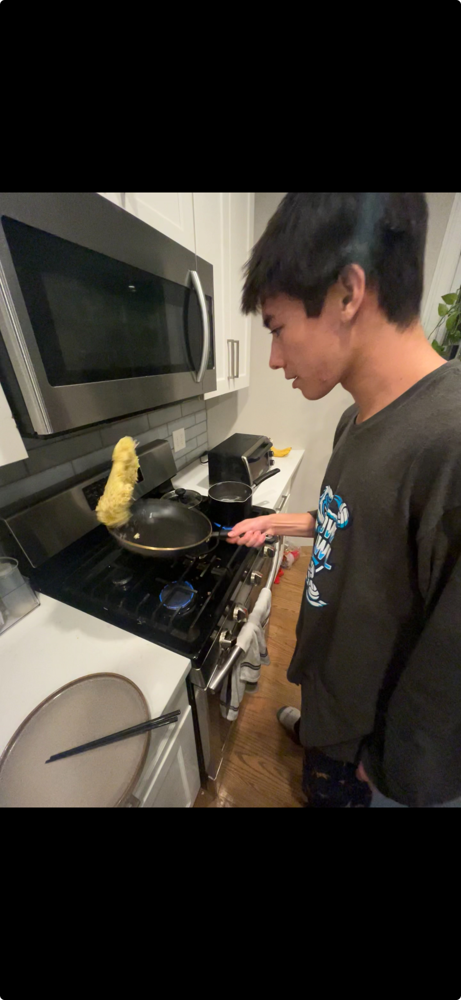

Hello! My name is Brinton Higgins, and welcome to my personal website. This website is a place where I can share a little about myself, my academic interests, and some of the projects I am working on. I am currently a college student studying mathematics and business with a concentration in supply chain management and a minor in data science. I play soccer, volleyball, and ski. I am currently searching for work in data analysis, but am open to many fields. I also enjoy cooking and eating foods from various cultures.
Recently, I have made various Asian dishes like scallion pancakes, pan-fried noodles, and ramen. Out of all the dishes, though, my favorite has been Hong Kong-style French toast. My friend Chris made it for me once last year, and it was the greatest thing I had ever eaten in my life. I made him make it for me again, but then he left to pursue work in California. Since then, with the help of my friend Alex, I have practiced and tried to recreate the dish. The most recent variation was delicious, but the bread used was too weak and absorbed too much liquid. I plan to try again soon, to make the greatest dessert of all time.
Email: higgins.b@northeastern.edu
